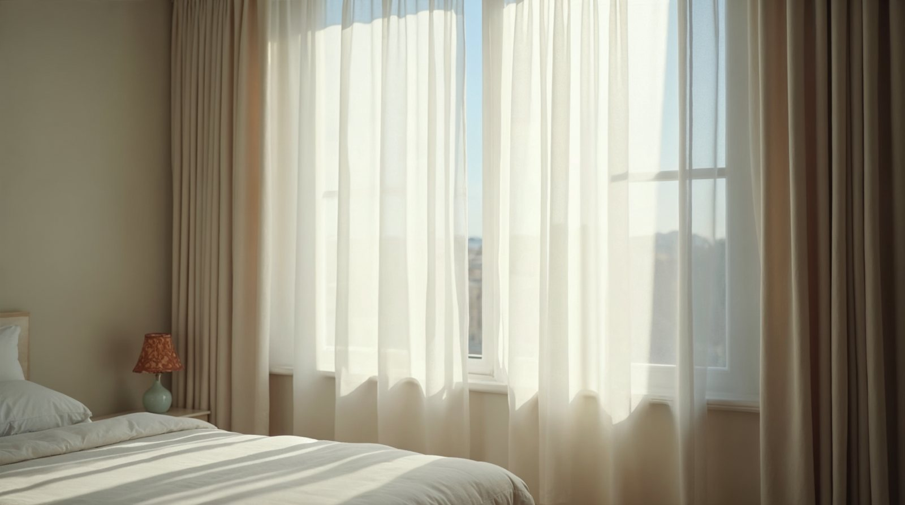
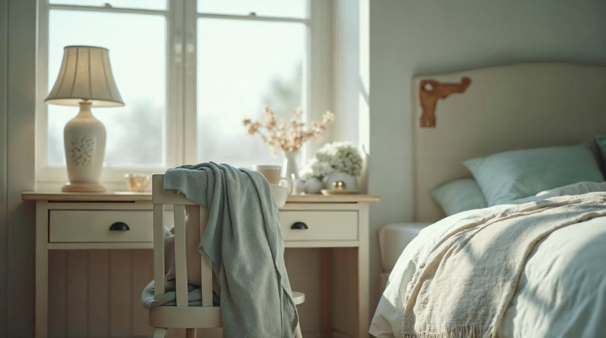
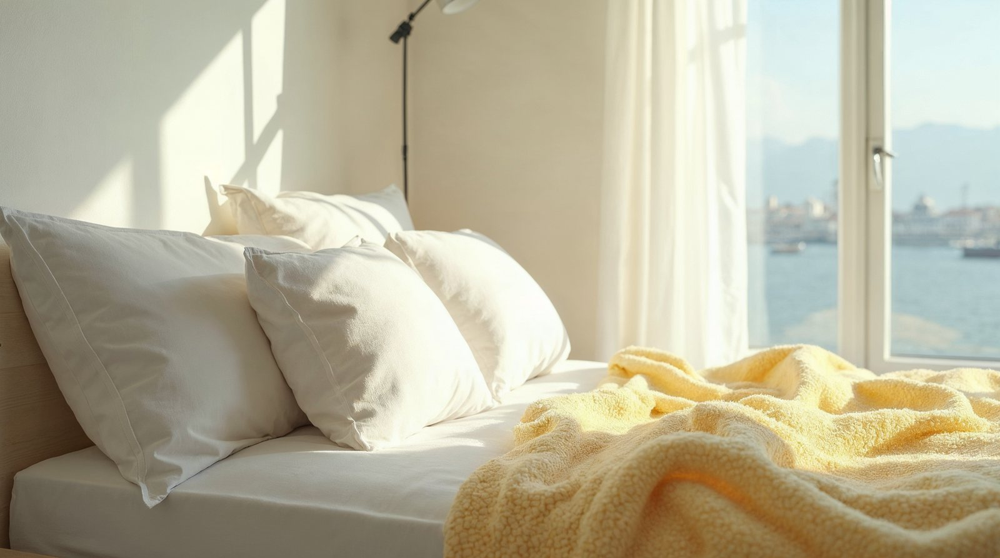
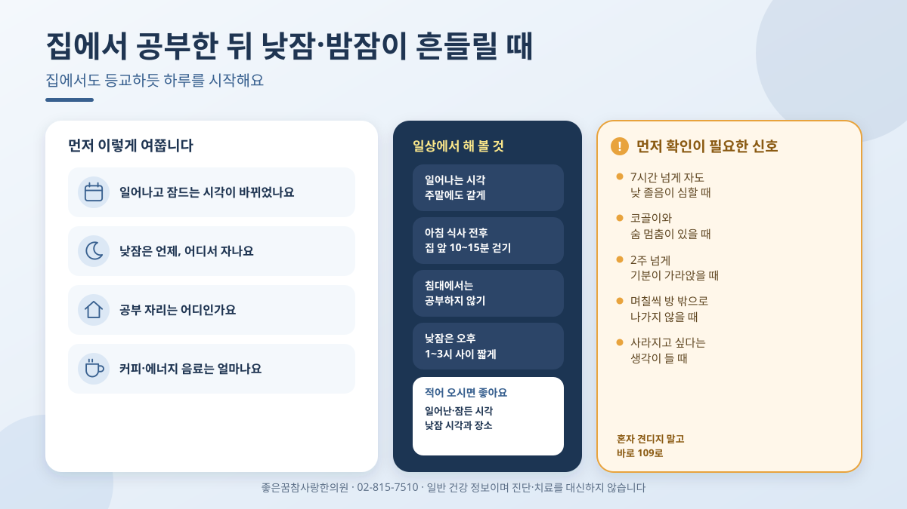

이종호 한의사 감수좋은꿈참사랑한의원 대표원장 (한의사 면허번호 19769)발행 2026-11-27 · 수정 2026-11-27
이 글의 차례
날이 추워지면 독서실이나 학원 자습실까지 오가는 길이 부담스러워 '오늘은 집에서 하자'는 날이 늘어납니다.
처음 며칠은 오가는 시간을 아껴 오히려 더 많이 공부할 수 있을 것 같지만, 일주일쯤 지나면 오후만 되면 따뜻한 방에서 눈꺼풀이 무거워 침대에 잠깐 눕게 되고, 그 낮잠이 한두 시간으로 길어진 뒤 밤에는 새벽 2~3시가 되어도 정신이 말똥말똥한 생활로 바뀌기 쉽습니다.
이는 의지가 약해서라기보다, 집에서는 아침 햇빛을 받으며 걷던 통학길, 정해진 시작 시각, 주변 사람들의 눈처럼 하루 리듬을 잡아 주던 신호가 한꺼번에 사라지기 때문인 경우가 많습니다. 그래서 집에서도 등교하듯 하루를 시작하는 장치를 만드는 것이 먼저입니다.
일어나는 시각을 정하고, 잠옷을 갈아입고, 집 앞을 10분쯤 걸어 아침 빛을 본 뒤 책상에 앉으며, 공부 자리와 잠자리를 나누고 낮잠은 책상에서 20분 안으로 짧게 자는 것부터 해 보세요. 리듬을 되돌려도 낮 졸음이 심하거나, 무기력과 외로움이 깊어져 아무것도 하기 싫은 날이 2주 넘게 이어진다면 상담을 받아 보세요.
왜 집에서 공부하면 낮잠이 늘고 밤잠이 늦어질까요
- 통학길이 사라지면 아침에 햇빛을 받는 시간이 크게 줄어듭니다. 아침 빛은 몸의 시계를 맞추는 가장 강한 신호 가운데 하나라, 이 빛이 줄면 밤에 졸음이 오는 시각이 조금씩 뒤로 밀리기 쉽습니다.
- 하루 걸음 수도 함께 줄어듭니다. 독서실까지 왕복 20~30분 걷던 것이 사라지면 몸은 덜 지치고, 밤에 잠을 부르는 힘도 약해집니다.
- 난방이 잘 되는 방, 특히 전기장판이나 온수매트 위에 앉아 공부하면 몸이 따뜻하게 늘어지면서 오후 졸음이 더 쉽게 찾아옵니다.
- 침대가 손 닿는 거리에 있으면 '잠깐 눕기'가 너무 쉽습니다. 책을 들고 침대에 기대 앉으면 몇 분 안에 잠들기도 하고, 침대가 공부하는 곳이 되면 밤에 누웠을 때 오히려 머리가 깨어 있는 일이 생깁니다.
- 시작 시각을 잡아 주던 독서실 개방 시간이나 학원 시간표가 없으니 일어나는 시각과 첫 공부 시각이 하루하루 늦어집니다. 하루 30분씩만 밀려도 일주일이면 몇 시간이 됩니다.
- 끼니가 불규칙해지고 배달 음식이나 간식이 늘면 식후 졸음이 커지고, 늦은 밤 야식이 잠드는 시각을 더 늦춥니다.
- 함께 공부하던 사람들과 떨어져 혼자 지내는 시간이 길어지면 휴대폰을 보는 시간이 늘고, 외로움과 막막함이 밤에 더 크게 느껴지기도 합니다.
- 한의학에서는 낮에는 양기가 겉으로 나와 몸을 깨우고 밤에는 안으로 들어가 쉬게 한다고 보는데, 낮에 움직임과 빛이 부족하면 이 흐름이 또렷하지 않아 낮에는 처지고 밤에는 잠들기 어려운 모습으로 나타난다고 설명하기도 합니다. 따뜻하고 움직임이 적은 환경에서 몸이 무겁고 졸린 모습을 습이 머문 것으로 보기도 합니다.
먼저 이렇게 여쭙니다
- 집에서 공부하기 시작한 지 얼마나 되었는지, 그 전후로 일어나는 시각과 잠드는 시각이 어떻게 달라졌는지 여쭙니다.
- 낮잠을 언제, 어디서, 얼마나 자는지 여쭙니다. 침대에서 자는지 책상에 엎드려 자는지도 함께 여쭙니다.
- 공부하는 자리가 어디인지(책상, 침대, 거실 바닥), 방의 온도와 전기장판 사용 여부를 여쭙니다.
- 하루에 바깥에 나가는 시간과 걸음 수, 햇빛을 보는 시간이 어느 정도인지 여쭙니다.
- 끼니 시각과 메뉴, 커피나 에너지 음료를 하루에 얼마나 마시는지 여쭙니다.
- 시험까지 남은 기간과 하루 공부 계획, 계획대로 되지 않을 때 어떤 마음이 드는지 여쭙니다.
- 가족과 함께 사는지, 원룸이나 고시원에서 혼자 지내는지, 이야기 나눌 사람이 있는지 여쭙니다.
- 밤에 충분히 잤는데도 낮에 참기 어려운 졸음이 오는지, 코골이나 숨 멈춤을 들은 적이 있는지 여쭙니다.

일상에서 먼저 해 볼 수 있는 것
아침: 집에서도 '등교' 만들기
- 일어나는 시각을 하나로 정하고 주말에도 1시간 넘게 바꾸지 않습니다. 예를 들어 오전 7시에 일어나기로 했다면 알람은 하나만, 침대에서 두세 걸음 떨어진 곳에 둡니다.
- 일어나면 바로 커튼을 걷고, 잠옷을 독서실에 갈 때 입던 옷으로 갈아입습니다. 옷이 바뀌면 몸도 '이제 공부할 시간'이라는 신호를 받습니다.
- 아침 식사 전후로 집 앞을 10~15분 걷습니다. 편의점이나 동네 한 바퀴처럼 목적지를 정하면 나가기가 쉽습니다. 흐린 날에도 바깥 빛은 실내 조명보다 훨씬 밝습니다.
- 첫 공부 시작 시각을 독서실에 도착하던 시각과 맞춥니다. 오전 8시 반에 앉았다면 집에서도 8시 반에 첫 과목을 펼칩니다.
공부 자리와 잠자리 나누기
- 침대에서는 공부하지 않습니다. 책상이 침대와 가까우면 의자를 침대를 등지는 방향으로 돌려 앉고, 침대 위 이불은 아침에 정리해 덮어 둡니다.
- 전기장판이나 온수매트는 공부하는 동안 끄고, 무릎 담요와 덧신 정도로 체온을 지킵니다. 방 온도는 20~22도쯤으로 맞추고, 2시간마다 창문을 5분쯤 열어 공기를 바꿉니다.
- 원룸처럼 공간이 좁다면 책상 위 스탠드를 '공부 중' 신호로 씁니다. 공부할 때만 켜고 쉬는 시간에는 끕니다.
낮잠과 오후 졸음
- 낮잠이 필요하면 오후 1~3시 사이, 책상에 엎드리거나 의자에 기대어 20분 안으로 잡니다. 타이머를 맞추고, 침대에는 눕지 않습니다.
- 잠깐 눈을 붙이기 직전에 커피를 한 잔 마시고 20분 뒤 일어나면 깨어날 때 덜 멍하다는 분도 있습니다. 다만 오후 2시 이후의 카페인은 밤잠에 남을 수 있어, 늦은 오후라면 피합니다.
- 졸음이 몰려오는 시간에는 앉아서 하는 암기 대신 서서 소리 내어 읽기, 문제 풀이처럼 손과 입을 쓰는 공부로 바꿉니다.
- 50분 공부한 뒤 10분은 일어나 물을 마시고 창가에 서거나 몸을 풉니다.
끼니와 저녁 시간
- 끼니 시각을 정합니다. 예를 들어 아침 7시 반, 점심 12시 반, 저녁 6시 반처럼 고정하면 몸의 시계도 함께 잡힙니다.
- 점심은 밥이나 면을 조금 덜고 단백질 반찬을 곁들여 식후 졸음을 줄입니다. 배달 음식을 시킨다면 저녁 7시 전에 받습니다.
- 저녁 공부를 마치는 시각을 정하고, 마칠 때 책상을 정리하고 다음 날 첫 과제를 메모한 뒤 스탠드를 끕니다. 이 '하교 의식'이 공부와 쉬는 시간의 경계가 됩니다.
- 잠들기 1시간 전부터는 방 조명을 낮추고, 휴대폰은 책상 위에서 충전합니다. 강의 영상이나 커뮤니티 글은 이 시간에 보지 않습니다.
일주일에 며칠은 밖에서
- 한파가 심한 날을 빼고 일주일에 2~3일은 독서실이나 도서관, 학원 자습실에 나갑니다. 집 공부와 바깥 공부를 섞으면 리듬이 무너지는 것을 막기 쉽습니다.
- 나가는 날에는 가장 집중이 필요한 과목을 몰아 둡니다.

상황별 예시
- 예를 들어 노량진 학원 자습실을 다니던 공무원 시험 준비생이 한파가 시작된 뒤 집에서 공부하면서, 오후 3시쯤 침대에 누웠다가 6시에 깨고 새벽 3시에 잠드는 생활이 일주일째 이어지는 경우, 먼저 오전 7시 기상과 집 앞 10분 걷기를 정하고 낮잠은 책상에서 20분으로 줄입니다. 처음 며칠은 밤에 잠이 늦게 오더라도 일어나는 시각부터 지켜야 잠드는 시각이 따라 움직이기 시작합니다.
- 예를 들어 재수를 준비하는 학생이 집 거실 바닥에 전기장판을 깔고 앉아 공부하다 매일 저녁 식사 뒤 꾸벅꾸벅 조는 경우, 공부 자리를 방 책상으로 옮기고 전기장판은 잠자리에서만 쓰며, 저녁 식사 뒤에는 15분 동안 설거지나 집 앞 걷기로 몸을 움직여 봅니다.
- 예를 들어 기말 과제를 하느라 원룸에서 며칠씩 나가지 않은 대학생이 낮과 밤이 헷갈릴 만큼 리듬이 흐트러진 경우, 하루에 한 번은 정해진 시각에 밖에 나가 밥을 먹고 오는 것부터 시작합니다. 과제가 끝난 뒤에도 늦잠으로 몰아 자기보다 같은 시각에 일어나는 것을 먼저 지킵니다.
- 예를 들어 집에서 공부하는 날이 길어지며 하루에 누구와도 말을 하지 않는 날이 이어지고, 공부가 손에 잡히지 않아 하루 종일 누워 있는 날이 늘어난 경우, 일주일에 며칠은 스터디나 학원에 나가 사람을 만나는 날을 만들고, 이런 상태가 2주 넘게 이어지면 상담을 받아 보세요.
자주 하는 오해
- 오가는 시간을 아끼니 집에서 하면 더 많이 공부할 수 있다고 여기기 쉽지만, 리듬이 무너지면 오히려 집중하는 시간이 줄어드는 경우가 많습니다.
- 낮잠을 길게 자 두면 밤에 더 오래 공부할 수 있다고 생각하는 분도 있습니다. 긴 낮잠은 밤잠을 늦추고, 늦어진 밤잠은 다음 날 아침을 다시 무겁게 만들어 악순환이 되기 쉽습니다.
- 밤에 집중이 잘 되니 나는 원래 밤형 인간이라고 정해 버리는 분도 있습니다. 아침 빛과 움직임이 줄어 몸의 시계가 뒤로 밀린 것일 수 있고, 대부분의 시험은 오전에 치르므로 시험 시각에 맞춰 리듬을 되돌려 두는 편이 좋습니다.
- 침대에 기대 앉아 책을 보는 것은 공부와 휴식을 함께 하는 것 같지만, 실제로는 공부도 잠도 얕아지게 만들기 쉽습니다.
- 추운 날 바깥에 나가면 감기에 걸리니 집에만 있는 게 낫다고 여기기 쉽지만, 옷을 잘 챙겨 입고 10~15분 걷는 것은 대개 큰 부담이 되지 않습니다. 몸이 아픈 날은 쉬어 갑니다.

스스로 점검해 보세요
- 집에서 공부하기 시작한 뒤 일어나는 시각이 한 시간 이상 늦어졌다.
- 하루에 바깥에 나가는 시간이 10분도 안 되는 날이 많다.
- 침대에서 30분 넘게 낮잠을 자는 날이 일주일에 세 번 이상이다.
- 침대나 바닥에 기대 앉아 공부하는 시간이 길다.
- 전기장판을 켠 채 공부하다 졸기 쉽다.
- 끼니 시각이 날마다 다르고, 밤 10시 넘어 야식을 먹는 날이 많다.
- 자정이 넘어도 졸리지 않아 휴대폰을 보다 새벽에 잠드는 날이 늘었다.
한의원에서 함께 살필 수 있는 경우
- 리듬을 정리해 보았는데도 오후만 되면 몸이 무겁고 참기 어려운 졸음이 이어지는 경우
- 밤에 누워도 머리가 맑아 잠들기 어렵고, 아침에는 몸이 무거워 일어나기 힘든 날이 반복되는 경우
- 오래 앉아 있으며 소화가 더디고 배가 더부룩하며, 식후에 유난히 처지는 경우
- 수험 생활이 길어지며 몸과 마음이 함께 지쳐 하루를 시작할 힘이 나지 않는 경우
좋은꿈참사랑한의원에서는 첫 방문 때 공부 환경과 하루 시간표, 일어나고 잠드는 시각, 낮잠과 끼니를 차례로 여쭙고, 시험까지 남은 기간과 요즘 마음 상태도 함께 정리합니다. 그다음 맥부터 짚어 보고, 혀와 배를 살펴 소화 상태와 몸이 무겁고 처지는 정도를 확인합니다.
그 뒤 기상 시각과 아침 걷기, 낮잠 시간, 공부 자리처럼 바꿀 것을 한두 가지로 좁혀 함께 정하고, 필요하면 침이나 한약을 상의합니다. 충분히 잤는데도 낮 졸음이 심하거나 코골이와 숨 멈춤이 있다면 수면 검사가 가능한 병원 진료를 함께 안내해 드립니다. 다시 오시면 지난번 정한 습관을 해 보신 기록을 이어서 보며, 시험 날까지 리듬을 함께 다듬어 갑니다.
공부 일정에 맞춰 오실 수 있는 시간은 방문 전 02-815-7510으로 전화해 확인해 주세요.
얼마나 지켜보고 언제 상담할까요
- 기상 시각 고정, 아침 걷기, 짧은 낮잠을 2주 동안 이어 가며 잠드는 시각과 낮잠 시간을 기록합니다.
- 처음 3~4일은 밤에 잠이 늦게 와서 힘들 수 있습니다. 이때 늦잠으로 메우지 않고 일어나는 시각을 지키는 것이 요령입니다.
- 2주가 지나도 잠드는 시각이 계속 새벽에 머물러 있거나, 밤잠이 충분한데도 낮 졸음이 심하다면 상담을 받아 보세요.
- 아래 신호가 있으면 기다리지 말고 도움을 청합니다.
이렇게 기록해 오시면 상담이 쉬워집니다
- 2주 동안의 일어난 시각, 첫 공부 시작 시각, 잠든 시각
- 낮잠을 잔 시각과 길이, 장소(침대·책상)
- 하루 바깥에 나간 시간과 대략의 걸음 수
- 끼니 시각과 커피·에너지 음료 양
- 집에서 공부한 날과 밖에서 공부한 날 표시
- 복용 중인 약과 영양제
이런 증상은 먼저 확인이 필요합니다
- 밤에 7시간 넘게 자도 낮에 참기 어려운 졸음이 이어지거나, 크게 웃거나 놀랄 때 갑자기 다리에 힘이 빠지는 경우
- 코를 크게 골고 자다가 숨이 멎는다는 말을 듣는 경우
- 스스로를 해칠 생각이 들면 ☎ 109로 바로 연락하세요.
이런 신호가 있으면 한의원보다 가까운 병원이나 응급실을 먼저 찾으세요.
관련 글
- 재택근무를 시작한 뒤 출퇴근 경계가 사라져 잠 리듬이 흐트러질 때는 어떻게 하나요?
- 낮잠을 자면 밤잠이 더 나빠지나요? 낮잠과 밤잠의 관계
- 오래 수험 생활을 하며 외롭고 고립된 느낌이 들 때는 어떻게 하나요?

여쭙는 것
- 집에서 공부하기 시작한 지 얼마나 되었는지, 그 전후로 일어나는 시각과 잠드는 시각…
- 낮잠을 언제, 어디서, 얼마나 자는지 여쭙니다. 침대에서 자는지 책상에 엎드려 자는…
- 공부하는 자리가 어디인지(책상, 침대, 거실 바닥), 방의 온도와 전기장판 사용 여…
생활에서 해 볼 것
- 일어나는 시각을 하나로 정하고 주말에도 1시간 넘게 바꾸지 않습니다. 예를 들어 오…
- 일어나면 바로 커튼을 걷고, 잠옷을 독서실에 갈 때 입던 옷으로 갈아입습니다. 옷이…
- 아침 식사 전후로 집 앞을 10~15분 걷습니다. 편의점이나 동네 한 바퀴처럼 목적…
한의원에서 함께 살필 것
- 리듬을 정리해 보았는데도 오후만 되면 몸이 무겁고 참기 어려운 졸음이 이어지는 경우
- 밤에 누워도 머리가 맑아 잠들기 어렵고, 아침에는 몸이 무거워 일어나기 힘든 날이…
- 오래 앉아 있으며 소화가 더디고 배가 더부룩하며, 식후에 유난히 처지는 경우
먼저 확인이 필요한 신호
- 밤에 7시간 넘게 자도 낮에 참기 어려운 졸음이 이어지거나, 크게 웃거나 놀랄 때…
- 코를 크게 골고 자다가 숨이 멎는다는 말을 듣는 경우
- 스스로를 해칠 생각이 들면 109로 바로 연락하세요.
한눈에 보는 표
| 구분 | 핵심 |
|---|---|
| 여쭙는 것 | 집에서 공부하기 시작한 지 얼마나 되었는지, 그 전후로 일어나는 시각과 잠드는 시각이 어떻게 달라졌는지 여쭙니다. 낮잠을 언제, 어디서, 얼마나 자는지 여쭙니다. 침대에서 자는지 책상에 엎드려 자는지도 함께 여쭙니다. |
| 생활에서 해 볼 것 | 일어나는 시각을 하나로 정하고 주말에도 1시간 넘게 바꾸지 않습니다. 예를 들어 오전 7시에 일어나기로 했다면 알람은 하나만, 침대에서 두세 걸음 떨어진 곳에 둡니다. 일어나면 바로 커튼을 걷고, 잠옷을 독서실에 갈 때 입던 옷으로 갈아입습니다. 옷이 바뀌면 몸도 '이제 공부할 시간'이라는 신호를 받습니다. |
| 한의원에서 함께 살필 것 | 리듬을 정리해 보았는데도 오후만 되면 몸이 무겁고 참기 어려운 졸음이 이어지는 경우 밤에 누워도 머리가 맑아 잠들기 어렵고, 아침에는 몸이 무거워 일어나기 힘든 날이 반복되는 경우 |
| 먼저 확인이 필요한 신호 | 밤에 7시간 넘게 자도 낮에 참기 어려운 졸음이 이어지거나, 크게 웃거나 놀랄 때 갑자기 다리에 힘이 빠지는 경우 코를 크게 골고 자다가 숨이 멎는다는 말을 듣는 경우 |
자주 묻는 질문
집에서 공부하는 게 독서실보다 나쁜가요?
장소 자체가 좋고 나쁜 것은 아닙니다. 집에서도 일어나는 시각과 첫 공부 시각, 공부 자리와 잠자리를 나누는 장치가 있으면 리듬을 지키기 쉽고, 그런 장치가 없으면 낮잠과 늦잠이 늘기 쉽습니다.
낮잠은 아예 자지 않는 게 좋을까요?
오후 졸음이 심하다면 오후 1~3시 사이 20분 안쪽으로 짧게 자는 것은 괜찮습니다. 침대보다는 책상에 엎드리거나 의자에 기대어 자고, 타이머를 맞춰 두세요.
이미 새벽 3시에 자는 생활이 굳었는데 어디서부터 바꾸나요?
잠드는 시각보다 일어나는 시각부터 정해 지키는 것이 먼저입니다. 아침에 일어나 바로 바깥 빛을 보고 낮잠을 줄이면, 밤에 졸음이 오는 시각도 조금씩 앞당겨질 수 있습니다.
추운 날 아침 걷기는 몸에 부담이 되지 않을까요?
모자와 장갑, 목도리를 챙기고 10~15분 정도 천천히 걷는 것은 대개 큰 부담이 되지 않습니다. 감기 기운이 있거나 몸이 아픈 날, 길이 얼어 미끄러운 날은 창가에서 바깥 빛을 보는 것으로 대신하세요.
한의원에서는 수험생 잠을 어떻게 살피나요?
하루 시간표와 일어나고 잠드는 시각, 낮잠과 끼니를 먼저 여쭙고 맥부터 짚어 봅니다. 혀와 배를 살펴 몸이 무겁고 처지는 정도를 확인한 뒤, 시험 날까지 지킬 수 있는 생활 리듬을 함께 정합니다.
좋은꿈참사랑한의원은 재진 때 지난번 이야기부터 이어서 여쭙니다. 진료시간과 예약은 오시는 길에서 확인하세요.
어디서 상담받을 수 있나요?
좋은꿈참사랑한의원은 서울 동작구 만양로2길 2 신성빌딩 3층·5층(서울 동작구 상도동, 7호선 상도역 3번 출구 근처)에 있습니다. 한의사 3명(이종호 대표원장, 조영기 수석진료원장, 정원영 진료원장)이 진료합니다. 진료시간은 평일 09:30~20:00(점심 13:00~14:00), 토·일·공휴일 09:30~15:00이며, 방문 전 전화로 확인을 권합니다. 예약은 네이버 예약, 카카오톡 상담, 전화 02-815-7510로 받습니다.
이 글은 일반적인 건강 정보이며 개인의 진단이나 치료를 대신하지 않습니다. 증상이 있거나 복용 중인 약이 있다면 진료를 통해 확인하세요. 치료 효과는 개인마다 다를 수 있습니다.
작성 기준: 일반적으로 알려져 있는 건강 정보를 참고해 정리했습니다(대표원장 감수). 증상 기록은 1~2주 동안 하루 1회, 비슷한 시간에 적어 오시면 지난 상태와 비교하기 쉽습니다.